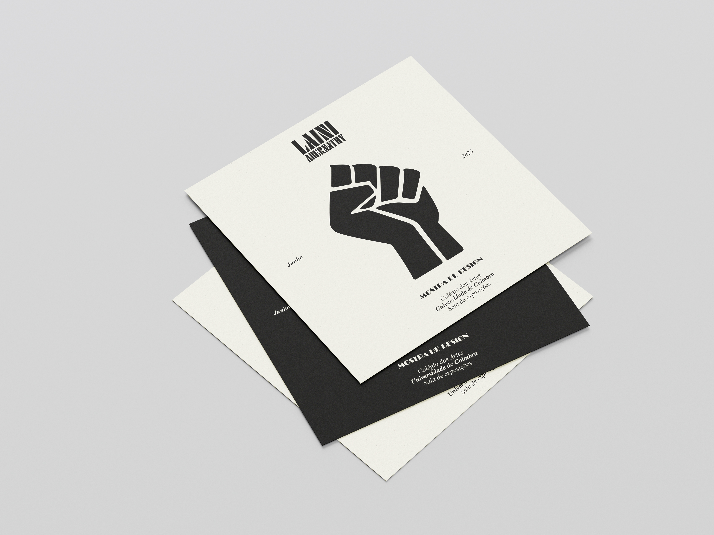
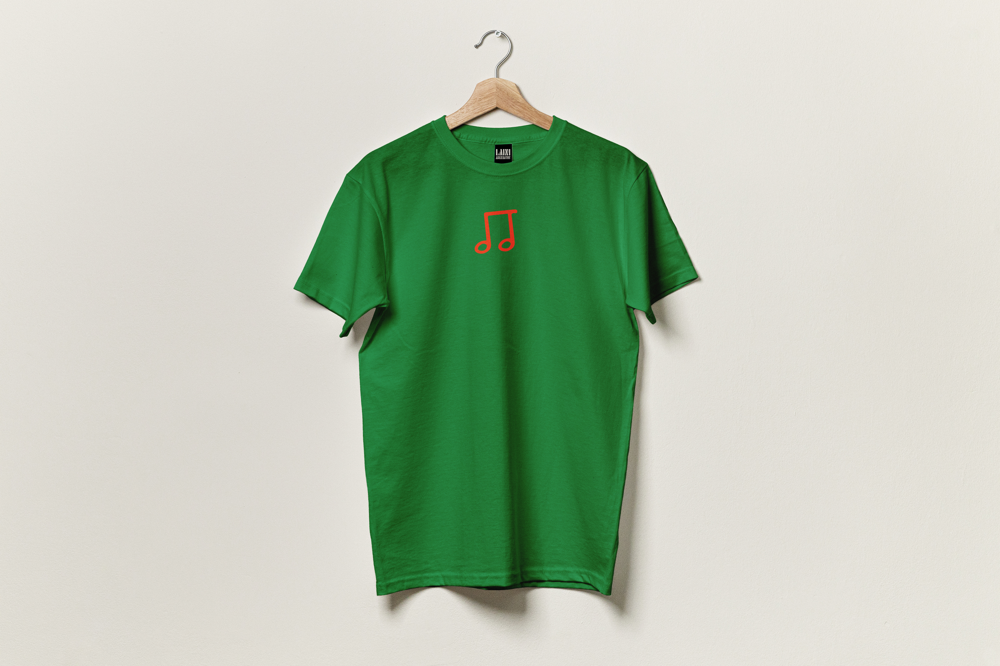
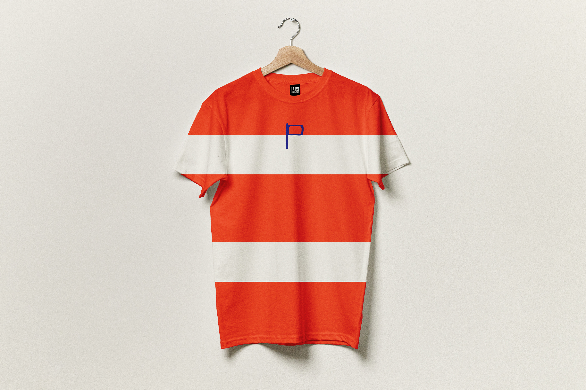
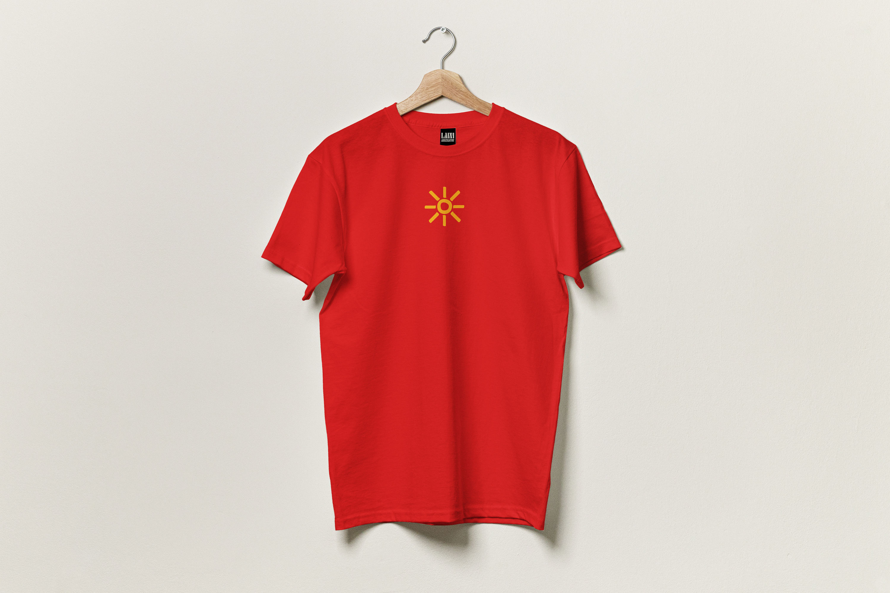
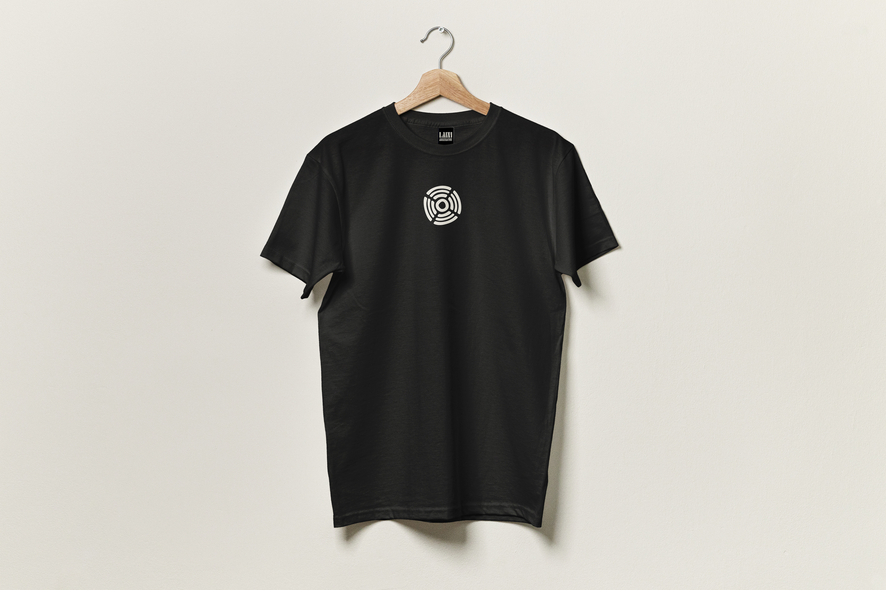
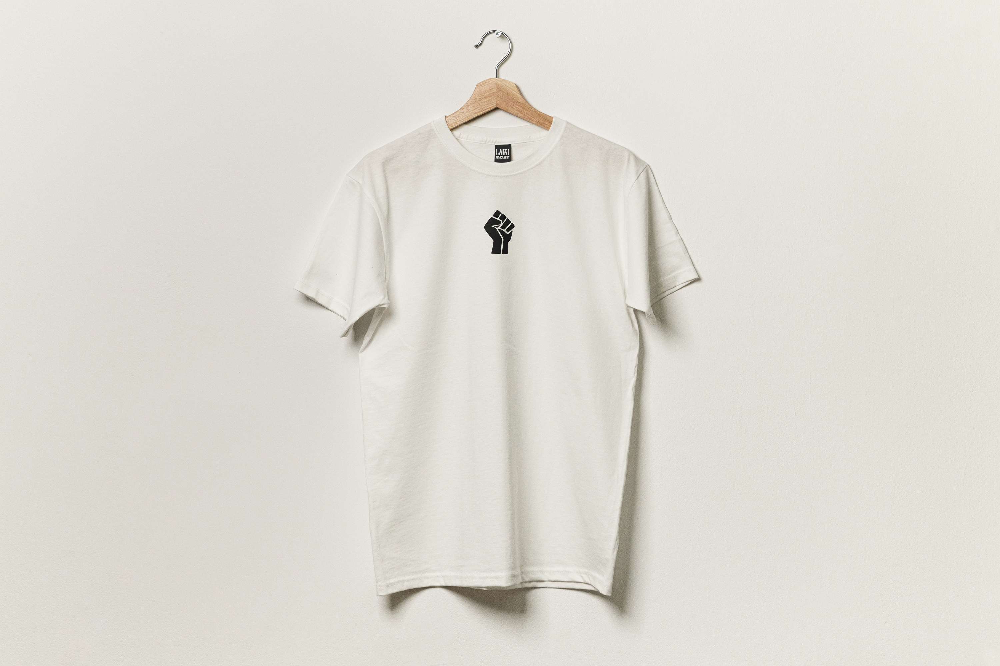
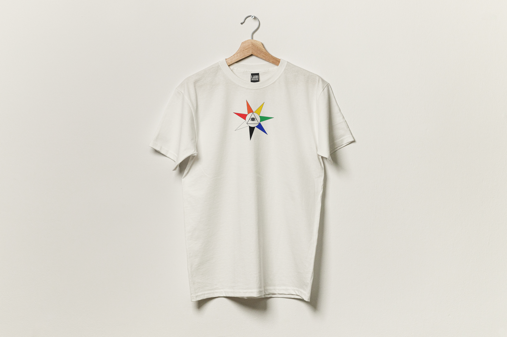

Laini Abernathy the Exhibition
Project created as part of the Design and Multimedia Workshop course in the Design and Multimedia Master's Degree program at the University of Coimbra
For this project we were tasked with the design and curation of a fictional exhibition about a designer that would be randomly assigned. We got Laini Abernathy, a designer from Chicago wich became the first African American woman to design record covers for the Jazz industry. The goal was to create a cohesive visual identity inspired by the designers history and work with record covers for the Jazz industry in Chicago, her work with the book "In our terribleness" and "The wall of respect", as well as her history with activism and her fight for the rights of African Americans all the elements that comprised the exhibition, including the exhibition space, posters, flyers, merchandise, and a 3D model of the exhibition space.
The identity for this exhibition draws directly from her legacy. Inspired by Abernathy’s bold uses of geometric composition, kinetic typography, and political symbolism, the visual system of this book pays tribute to her refusal of neutrality. Color becomes a voice. Type becomes a gesture. Every layout echoes the improvisational structure of jazz: a controlled freedom, alive with tension, rhythm, and breath.










